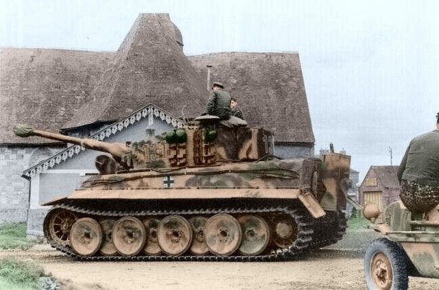
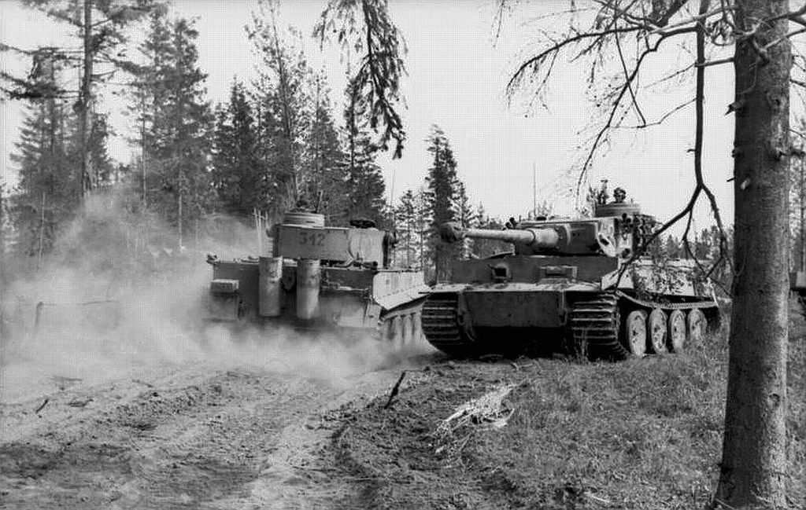
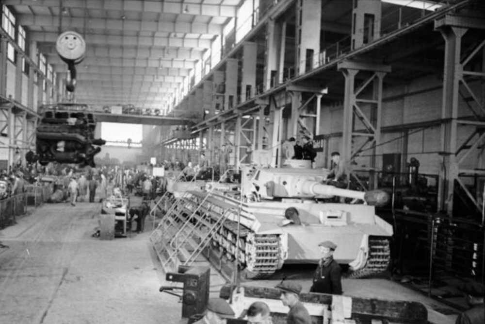
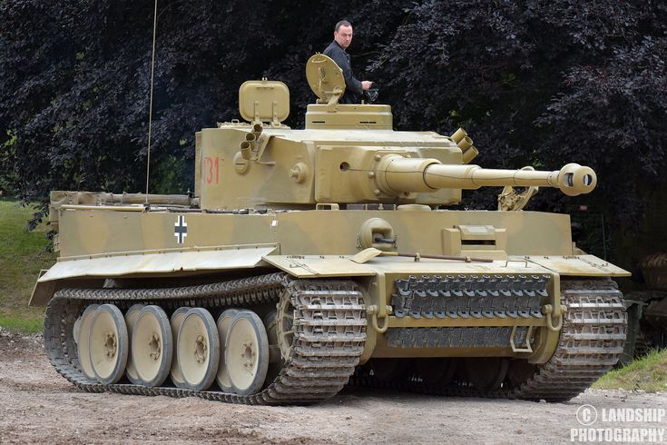
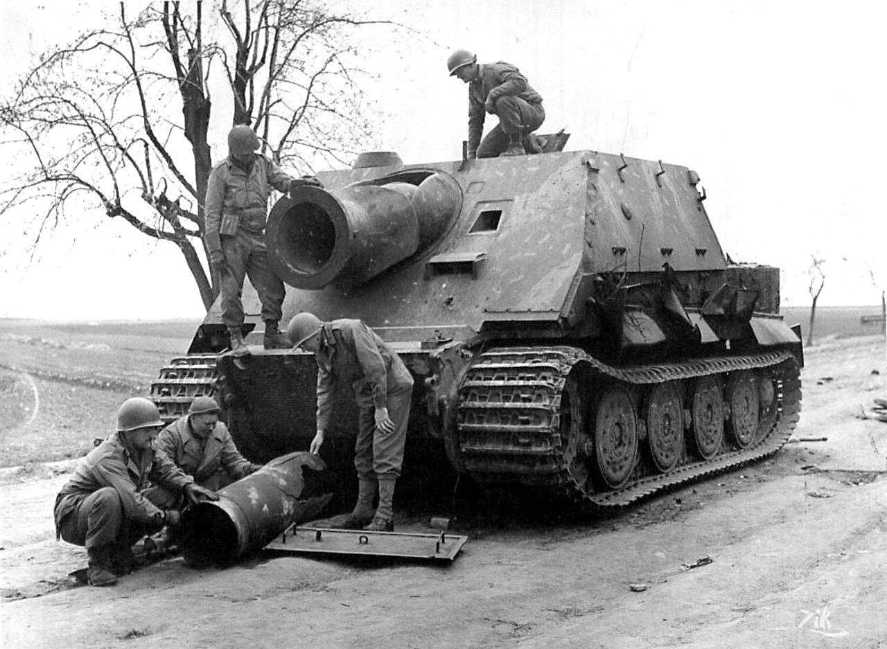
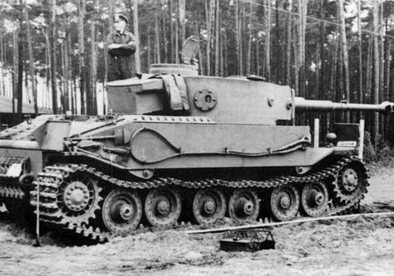
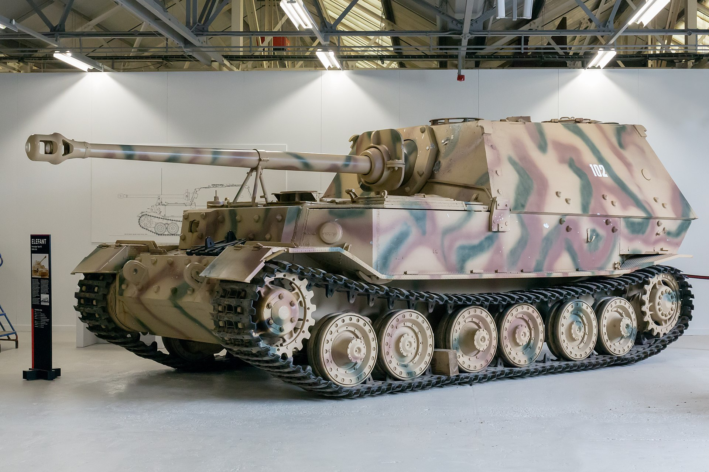

Pendahuluan

Tank Tiger I, Sebuah Tank pabrikan dari Henschel und Sohn yang juga dikenal sebagai Panzerkampfwagen Tiger Ausf. E, adalah tank berat legendaris buatan Jerman yang pertama kali digunakan pada tahun 1942 dan terlibat dalam berbagai pertempuran
selama Perang Dunia II. Meskipun nama resminya adalah Panzerkampfwagen VI Ausführung E, tank ini lebih sering disebut dengan sebutan “Tiger” saja.
Sejarah

Pada masa Pengepungan Leningrad, tank Tiger I pertama kali diterjunkan di medan perang. Dalam operasi ini, pasukan Jerman yang didukung oleh tank Tiger berhasil merebut kota Leningrad, meskipun banyak dari tank tersebut mengalami kerusakan pada sistem
transmisi mereka. Keberhasilan pasukan Jerman ini menjadi salah satu momen penting dalam sejarah perang dunia kedua.
https://tankmuseum.org/article/tiger-combat-debut/

Produksi tank Tiger I menjadi salah satu kendaraan berat yang sulit dihadapi selama Perang Dunia II, namun terpaksa dihentikan karena kesulitan mendapatkan bahan baku yang dibutuhkan. Kendala ini menjadi batu sandungan besar dalam proses produksi, mengingat
kompleksitas dan kebutuhan material khusus yang dibutuhkan untuk pembuatan tank ini

Meriam 8,8 cm KwK 36 (yang berasal dari 8,8 cm Flak 36) memainkan peran penting dalam sejarah militer selama Perang Dunia II. Ini adalah persenjataan utama dari tank PzKpfw VI Tiger I.
8,8 cm KwK 36 (Jerman: 8,8 cm Kampfwagenkanone 36) adalah meriam tank kaliber 88 mm yang digunakan oleh Tentara Jerman. Meriam ini dikembangkan dan diproduksi oleh perusahaan Krupp
KwK 36 berasal dari senjata anti-pesawat FlaK 36 8,8 cm dengan mengadaptasi/memodifikasi senjata tersebut untuk ruang terbatas yang tersedia di Turret tank. Bagian-bagian dari KwK 36 dibuat dengan desain yang hampir sama dengan senjata 75 milimeter (3,0
inci) dan 50 milimeter (2,0 inci) yang telah digunakan pada tank-tank Jerman.
https://id.wikipedia.org/wiki/8,8_cm_KwK_36

Tiger 131 adalah satu-satunya Tiger I yang masih berfungsi di dunia. Kamu bisa melihatnya dalam event Tiger Day Spring di Museum Tank Boving, Britania Raya setiap tahunnya
Tiger 131 dibangun di Kassel, Jerman selatan, dengan bagian lambung oleh Henschel dan bagian turret oleh Wegmann AG. Tank ini selesai pada Februari 1943 dan dikirim ke Tunisia antara 12 Maret dan 16 April 1943. Di sana, ia ditempatkan dalam Schwere Panzer-Abteilung
504 selama kampanye Tunisia.
Museum Tank meyakini bahwa Tiger Tank 131 ditangkap di Djebel Djaffa, Tunisia, pada 21 April 1943. Akan tetapi cerita menjadi berubah ketika Dale Oscroft mengunjungi museum. Ayahnya, John Oscroft, adalah bagian dari Batalyon Sherwood Foresters ke-2
yang menangkap posisi bernama “Point 174” (Gueriat el Atach) tanpa dukungan tank yang dijanjikan. Setelah ditangkap, pasukan Jerman segera melakukan serangan balasan dengan tank, termasuk Tiger. John Oscroft diperintahkan untuk menyerang satu
Tiger dengan senjata anti-tank PIAT. Tiger tersebut akhirnya ditinggalkan oleh awaknya setelah mengalami kerusakan, dan pasukan Inggris mengamankannya.
https://tankmuseum.org/article/the_myth_of_tiger_131
Varian
Tank Tiger ini memiliki beberapa varian yang cukup menarik, Di antarnya:
Sturmtiger

Sturmtiger atau Sturmmörserwagen 606/4 mit 38 cm (14,96 inci) RW 61. Hanya dua puluh unit dari mortar swa-gerak gaya Barnum ini dibuat, yang menembakkan proyektil 380 mm (14,96 inci) seberat satu ton (kaliber kapal
perang), untuk menangani benteng beton atau menghancurkan seluruh blok bangunan secara berurutan.
Tiger Porsche

Tiger Porsche, juga dikenal VK.45.01(P), Adalah prototipe tank berat yang dirancang oleh Porsche di Jerman. Sayangnya, Tiger Porsche kalah dari pesaingnya Henschel pada uji coba dan tidak dipilih untuk
produksi massal.
Elefant

Jika tadi Sturmtiger berasal dari sasis Tiger 1, Maka Sebagian besar sasis Tiger (P) yang sudah dibuat diubah menjadi Elefant Panzerjager!
Elefant (bahasa Jerman untuk "gajah") adalah sebuah tank perusak berat (self propelled anti-tank gun) yang digunakan oleh German Panzerjäger (unit anti-tank) selama Perang Dunia II. Sembilan puluh satu unit dibuat pada tahun 1943 dengan
nama Ferdinand (diambil dari nama perancangnya, Ferdinand Porsche)